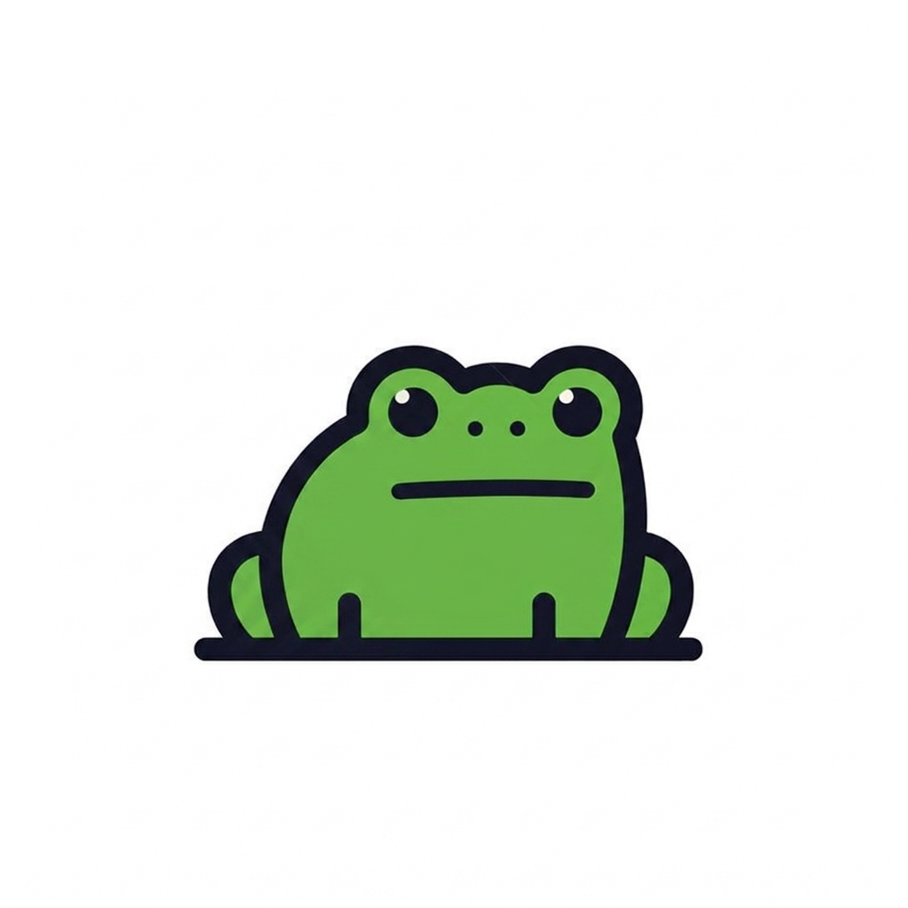

Frog brand · asset library
12 image-gen prompts for a lighthearted frog character set, all built to reference the real logo below so they read as one family. Each prompt tells the model exactly what to keep, points to the attached original, and adds one thing that's new. Each one also names where it's meant to show up in the app.
Every card is a ready-to-paste prompt. Because these are meant to be generated with the original logo attached as a reference image (image-to-image / "use this as reference" in Higgsfield, Midjourney's --cref, GPT image edit, etc.) — not from text alone — each prompt ends by pointing at that attachment. Attach frog-logo-reference.jpg (thumbnail below) alongside the prompt text every time.

frog-logo-reference.jpgThe reference clause
This paragraph is what every prompt below shares verbatim — it names what has to survive from the original logo (proportions, outline, fill, eyes, ground shape) and hands the model the source image to match against, rather than trying to describe the exact geometry in words.
Keep these aspects from the attached reference image: the rounded, chubby frog silhouette — a wide body with haunches bulging out at the base, two raised rounded bumps on top of the head where the eyes sit, and short leg/foot marks peeking out along the bottom edge; the thick, uniform dark navy-black outline with no gradient; the flat single-tone green body fill, matched exactly to the reference's color; the simple black dot eyes, each with one small white highlight dot; the two small black nostril dots; the flat, deadpan closed-mouth line; the flat dark rounded ground shape it sits on; and the plain white background with no shadow, texture, or added gradient. The reference has no arms — if the pose below needs arms or hands, draw simple rounded stub arms in the exact same outline weight as the legs, filled white (not green), the way any other new prop is rendered. Keep green reserved for the frog's body only, same as the reference. Match the reference's exact colors and line weight throughout. If you want to see what the original image looks like, here it is — reference image attached.
Each card = the reference clause above + one distinguishing addition. Cards tagged deviates call out the one or two things they deliberately change from the reference (pose, mouth, eyes) — everything else in that card still locks to the original.
Buff Frog
"The Swole Frog"
Use for: PR celebrations, big-lift achievement badges, streak milestones, "new e1RM" toast.
Keep these aspects from the attached reference image: the rounded, chubby frog silhouette — a wide body with haunches bulging out at the base, two raised rounded bumps on top of the head where the eyes sit, and short leg/foot marks peeking out along the bottom edge; the thick, uniform dark navy-black outline with no gradient; the flat single-tone green body fill, matched exactly to the reference's color; the simple black dot eyes, each with one small white highlight dot; the two small black nostril dots; the flat, deadpan closed-mouth line; the flat dark rounded ground shape it sits on; and the plain white background with no shadow, texture, or added gradient. The reference has no arms — if the pose below needs arms or hands, draw simple rounded stub arms in the exact same outline weight as the legs, filled white (not green), the way any other new prop is rendered. Keep green reserved for the frog's body only, same as the reference. Match the reference's exact colors and line weight throughout. If you want to see what the original image looks like, here it is — reference image attached. For this character: have the frog stand instead of sit, planted on the same flat ground shape. Give it two oversized rounded muscular arms flexed up beside the head in a double-bicep pose — much bigger and rounder than a normal stub arm, but outlined and filled the same way as the rest of the body. Keep the head, eyes, and deadpan mouth exactly as the reference — the joke is a serious face on a huge frog.
Skinny Frog
"The Noodle"
Use for: deload-week empty state, low-volume warning, "detraining" finding, rest-day nudges.
Keep these aspects from the attached reference image: the rounded, chubby frog silhouette — a wide body with haunches bulging out at the base, two raised rounded bumps on top of the head where the eyes sit, and short leg/foot marks peeking out along the bottom edge; the thick, uniform dark navy-black outline with no gradient; the flat single-tone green body fill, matched exactly to the reference's color; the simple black dot eyes, each with one small white highlight dot; the two small black nostril dots; the flat, deadpan closed-mouth line; the flat dark rounded ground shape it sits on; and the plain white background with no shadow, texture, or added gradient. The reference has no arms — if the pose below needs arms or hands, draw simple rounded stub arms in the exact same outline weight as the legs, filled white (not green), the way any other new prop is rendered. Keep green reserved for the frog's body only, same as the reference. Match the reference's exact colors and line weight throughout. If you want to see what the original image looks like, here it is — reference image attached. For this character: this one breaks the "chubby" rule on purpose. Draw the body noticeably thinner and slightly deflated compared to the reference, still sitting in the same pose on the same ground shape, with thin narrow arms hanging limply at its sides. Keep the outline weight, eye style, head bumps, green fill, and background exactly as the reference — only the body silhouette itself is thinner.
Professional Frog
"The Auditor"
Use for: data-export screen, CSV/API docs, settings/account, personal-token management.
Keep these aspects from the attached reference image: the rounded, chubby frog silhouette — a wide body with haunches bulging out at the base, two raised rounded bumps on top of the head where the eyes sit, and short leg/foot marks peeking out along the bottom edge; the thick, uniform dark navy-black outline with no gradient; the flat single-tone green body fill, matched exactly to the reference's color; the simple black dot eyes, each with one small white highlight dot; the two small black nostril dots; the flat, deadpan closed-mouth line; the flat dark rounded ground shape it sits on; and the plain white background with no shadow, texture, or added gradient. The reference has no arms — if the pose below needs arms or hands, draw simple rounded stub arms in the exact same outline weight as the legs, filled white (not green), the way any other new prop is rendered. Keep green reserved for the frog's body only, same as the reference. Match the reference's exact colors and line weight throughout. If you want to see what the original image looks like, here it is — reference image attached. For this character: keep the exact sitting pose from the reference. Add a thin necktie shape draped down the front of the body, and small round wire-frame glasses circling each eye (the black dot eyes still show through the lenses). Prop a small rounded clipboard against the body at its side, resting on the ground shape rather than held.
Sleepy Frog
"The Zonked"
Use for: low-sleep correlation callouts, "log your sleep" reminder, poor-recovery banner.
Keep these aspects from the attached reference image: the rounded, chubby frog silhouette — a wide body with haunches bulging out at the base, two raised rounded bumps on top of the head where the eyes sit, and short leg/foot marks peeking out along the bottom edge; the thick, uniform dark navy-black outline with no gradient; the flat single-tone green body fill, matched exactly to the reference's color; the simple black dot eyes, each with one small white highlight dot; the two small black nostril dots; the flat, deadpan closed-mouth line; the flat dark rounded ground shape it sits on; and the plain white background with no shadow, texture, or added gradient. The reference has no arms — if the pose below needs arms or hands, draw simple rounded stub arms in the exact same outline weight as the legs, filled white (not green), the way any other new prop is rendered. Keep green reserved for the frog's body only, same as the reference. Match the reference's exact colors and line weight throughout. If you want to see what the original image looks like, here it is — reference image attached. For this character: keep the same sitting pose and body. Draw a flat dark curved line drooping halfway over each eye, like a heavy eyelid, so the dot eyes are half-covered. Add one small rounded stub arm resting next to a small white mug propped beside the body, with a thin steam line rising from it.
Bandaged Frog
"The Deload"
Use for: injury/pain flag, RIR-0 failed-set warning, forced-rest recommendation, overtraining alert.
Keep these aspects from the attached reference image: the rounded, chubby frog silhouette — a wide body with haunches bulging out at the base, two raised rounded bumps on top of the head where the eyes sit, and short leg/foot marks peeking out along the bottom edge; the thick, uniform dark navy-black outline with no gradient; the flat single-tone green body fill, matched exactly to the reference's color; the simple black dot eyes, each with one small white highlight dot; the two small black nostril dots; the flat, deadpan closed-mouth line; the flat dark rounded ground shape it sits on; and the plain white background with no shadow, texture, or added gradient. The reference has no arms — if the pose below needs arms or hands, draw simple rounded stub arms in the exact same outline weight as the legs, filled white (not green), the way any other new prop is rendered. Keep green reserved for the frog's body only, same as the reference. Match the reference's exact colors and line weight throughout. If you want to see what the original image looks like, here it is — reference image attached. For this character: keep the same sitting pose and deadpan face exactly as the reference. Add one rounded stub arm held across the body in a triangular sling shape, drawn with a dashed stitch-line pattern. Add a small white ice-pack rectangle propped against the opposite side of the head.
Zen Frog
"The Recovered"
Use for: high recovery-score state, mobility/cooldown screen, rest-day encouragement copy.
Keep these aspects from the attached reference image: the rounded, chubby frog silhouette — a wide body with haunches bulging out at the base, two raised rounded bumps on top of the head where the eyes sit, and short leg/foot marks peeking out along the bottom edge; the thick, uniform dark navy-black outline with no gradient; the flat single-tone green body fill, matched exactly to the reference's color; the simple black dot eyes, each with one small white highlight dot; the two small black nostril dots; the flat, deadpan closed-mouth line; the flat dark rounded ground shape it sits on; and the plain white background with no shadow, texture, or added gradient. The reference has no arms — if the pose below needs arms or hands, draw simple rounded stub arms in the exact same outline weight as the legs, filled white (not green), the way any other new prop is rendered. Keep green reserved for the frog's body only, same as the reference. Match the reference's exact colors and line weight throughout. If you want to see what the original image looks like, here it is — reference image attached. For this character: keep the exact sitting pose and body from the reference. Replace the two dot eyes with two flat closed-eye lines, same weight as the mouth line. Add two small rounded stub arms resting in front of the body, palms implied by a simple rounded end. Draw one thin ring arcing behind the head like a ripple.
Confused Frog
"The No-Data"
Use for: empty states, 404 page, "not enough data" findings, blank first-run onboarding.
Keep these aspects from the attached reference image: the rounded, chubby frog silhouette — a wide body with haunches bulging out at the base, two raised rounded bumps on top of the head where the eyes sit, and short leg/foot marks peeking out along the bottom edge; the thick, uniform dark navy-black outline with no gradient; the flat single-tone green body fill, matched exactly to the reference's color; the simple black dot eyes, each with one small white highlight dot; the two small black nostril dots; the flat, deadpan closed-mouth line; the flat dark rounded ground shape it sits on; and the plain white background with no shadow, texture, or added gradient. The reference has no arms — if the pose below needs arms or hands, draw simple rounded stub arms in the exact same outline weight as the legs, filled white (not green), the way any other new prop is rendered. Keep green reserved for the frog's body only, same as the reference. Match the reference's exact colors and line weight throughout. If you want to see what the original image looks like, here it is — reference image attached. For this character: keep the same sitting pose and body, but tilt the head slightly to one side. Add one rounded stub arm bent up near the head in a scratching gesture. Draw a rounded black question mark floating just above the head, offset slightly from center.
Party Frog
"The Milestone"
Use for: streak-milestone toast, onboarding-complete screen, first-PR celebration, anniversary badge.
Keep these aspects from the attached reference image: the rounded, chubby frog silhouette — a wide body with haunches bulging out at the base, two raised rounded bumps on top of the head where the eyes sit, and short leg/foot marks peeking out along the bottom edge; the thick, uniform dark navy-black outline with no gradient; the flat single-tone green body fill, matched exactly to the reference's color; the simple black dot eyes, each with one small white highlight dot; the two small black nostril dots; the flat, deadpan closed-mouth line; the flat dark rounded ground shape it sits on; and the plain white background with no shadow, texture, or added gradient. The reference has no arms — if the pose below needs arms or hands, draw simple rounded stub arms in the exact same outline weight as the legs, filled white (not green), the way any other new prop is rendered. Keep green reserved for the frog's body only, same as the reference. Match the reference's exact colors and line weight throughout. If you want to see what the original image looks like, here it is — reference image attached. For this character: this one leaves the ground shape — draw the frog mid-leap instead of sitting, body tilted upward, legs kicked out behind it, two rounded stub arms thrown straight up. Keep the same deadpan mouth line even mid-air — the frog does not look excited, only the pose says "celebration." Scatter small rounded confetti shapes of varying sizes around the figure, alternating white and the same green as the body.
Turbo Frog
"The Rest Timer"
Use for: rest-timer screen, fast-set logging feedback, "new fastest session" callout.
Keep these aspects from the attached reference image: the rounded, chubby frog silhouette — a wide body with haunches bulging out at the base, two raised rounded bumps on top of the head where the eyes sit, and short leg/foot marks peeking out along the bottom edge; the thick, uniform dark navy-black outline with no gradient; the flat single-tone green body fill, matched exactly to the reference's color; the simple black dot eyes, each with one small white highlight dot; the two small black nostril dots; the flat, deadpan closed-mouth line; the flat dark rounded ground shape it sits on; and the plain white background with no shadow, texture, or added gradient. The reference has no arms — if the pose below needs arms or hands, draw simple rounded stub arms in the exact same outline weight as the legs, filled white (not green), the way any other new prop is rendered. Keep green reserved for the frog's body only, same as the reference. Match the reference's exact colors and line weight throughout. If you want to see what the original image looks like, here it is — reference image attached. For this character: draw the frog leaning forward mid-stride instead of sitting, one leg extended back, one rounded stub arm holding a small white stopwatch out in front. Add three short parallel motion-line marks trailing behind the body to suggest speed. Keep the face exactly as deadpan as the reference.
Night-Owl Frog
"The Late Session"
Use for: late-night logging streaks, dark-mode promo, "night owl" achievement badge.
Keep these aspects from the attached reference image: the rounded, chubby frog silhouette — a wide body with haunches bulging out at the base, two raised rounded bumps on top of the head where the eyes sit, and short leg/foot marks peeking out along the bottom edge; the thick, uniform dark navy-black outline with no gradient; the flat single-tone green body fill, matched exactly to the reference's color; the simple black dot eyes, each with one small white highlight dot; the two small black nostril dots; the flat, deadpan closed-mouth line; the flat dark rounded ground shape it sits on; and the plain white background with no shadow, texture, or added gradient. The reference has no arms — if the pose below needs arms or hands, draw simple rounded stub arms in the exact same outline weight as the legs, filled white (not green), the way any other new prop is rendered. Keep green reserved for the frog's body only, same as the reference. Match the reference's exact colors and line weight throughout. If you want to see what the original image looks like, here it is — reference image attached. For this character: keep the exact sitting pose and body from the reference. Add a small rounded white headlamp shape centered on the head between the two eye-bumps, with a short cone of straight lines fanning out as its beam. Add a small crescent moon and two tiny stars in the upper corner of the frame.
Veteran Frog
"The Anniversary"
Use for: long-streak badges (6mo/1yr), loyalty milestones, "veteran lifter" achievement.
Keep these aspects from the attached reference image: the rounded, chubby frog silhouette — a wide body with haunches bulging out at the base, two raised rounded bumps on top of the head where the eyes sit, and short leg/foot marks peeking out along the bottom edge; the thick, uniform dark navy-black outline with no gradient; the flat single-tone green body fill, matched exactly to the reference's color; the simple black dot eyes, each with one small white highlight dot; the two small black nostril dots; the flat, deadpan closed-mouth line; the flat dark rounded ground shape it sits on; and the plain white background with no shadow, texture, or added gradient. The reference has no arms — if the pose below needs arms or hands, draw simple rounded stub arms in the exact same outline weight as the legs, filled white (not green), the way any other new prop is rendered. Keep green reserved for the frog's body only, same as the reference. Match the reference's exact colors and line weight throughout. If you want to see what the original image looks like, here it is — reference image attached. For this character: keep the same sitting pose from the reference. Add one rounded stub arm resting on a thin white cane propped beside the body. Add small round wire-frame glasses over the eyes, and a round medal disc hanging from a short ribbon strip at the center of the chest.
Panic Frog
"The Missed Day"
Use for: streak-break warning, missed-session nudge, "don't lose your streak" reminder.
Keep these aspects from the attached reference image: the rounded, chubby frog silhouette — a wide body with haunches bulging out at the base, two raised rounded bumps on top of the head where the eyes sit, and short leg/foot marks peeking out along the bottom edge; the thick, uniform dark navy-black outline with no gradient; the flat single-tone green body fill, matched exactly to the reference's color; the simple black dot eyes, each with one small white highlight dot; the two small black nostril dots; the flat, deadpan closed-mouth line; the flat dark rounded ground shape it sits on; and the plain white background with no shadow, texture, or added gradient. The reference has no arms — if the pose below needs arms or hands, draw simple rounded stub arms in the exact same outline weight as the legs, filled white (not green), the way any other new prop is rendered. Keep green reserved for the frog's body only, same as the reference. Match the reference's exact colors and line weight throughout. If you want to see what the original image looks like, here it is — reference image attached. For this character: keep the same sitting pose and body from the reference. This is the one place the deadpan face breaks — replace the flat mouth line with a wide open oval mouth, and replace the dot eyes with small hollow circles (no pupil, no highlight) for a startled look. Add two rounded stub arms thrown straight up beside the head, and a single cracked zigzag line above the head like a snapped streak.
frog-brand-identity.html, an expressive character only belongs in "playground" zones (onboarding, empty states, celebrations, errors) — never layered over live numbers. Same rule applies to this whole set.